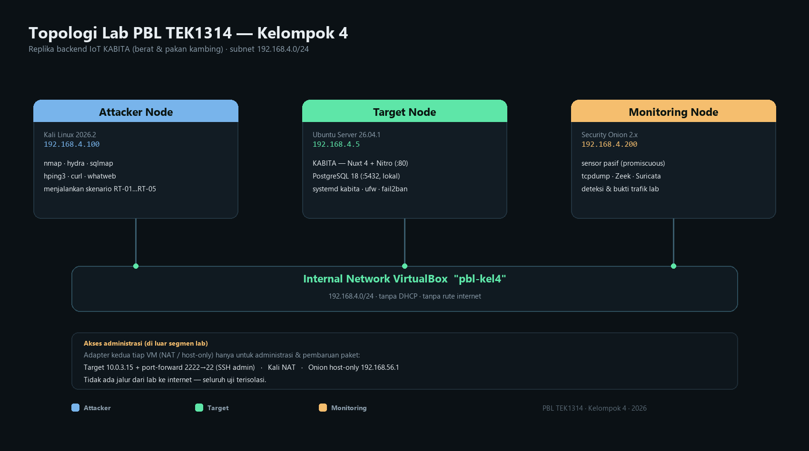

Mengamankan backend pencatatan
berat badan & pakan kambing.
Lab tertutup tiga node: satu replika backend IoT yang sengaja dibuat rentan, satu penyerang, satu sensor — lalu satu siklus tertutup sampai celahnya benar-benar tertutup.
Kandang A pejantan, Kandang B indukan. Setiap kambing punya identitas RFID; pencatatan dilakukan per ekor, bukan per kandang.
Berat dan pakan dicatat bersamaan. Satu baris telemetri = satu penimbangan plus jumlah pakan yang diberikan hari itu.
Sepuluh hari riwayat. Cukup untuk membedakan traffic normal dari traffic serangan saat evaluasi deteksi.
Penyerang, target, sensor. Semua di satu jaringan internal tanpa akses internet, sehingga hasil uji bisa diulang persis.
Adapter kedua hanya untuk administrasi: SSH 2222→22 di target, NAT di Kali, host-only di sensor.

Ingest meniru perangkat: POST /api/telemetri?token=… dengan body {rfid, berat_kg, pakan_kg}.
| Celah | Diuji oleh | Ditutup oleh | |
|---|---|---|---|
| 1 | SQL injection pada /api/telemetri & /api/login | RT-03 | C-2 |
| 2 | Password plaintext, kredensial admin/admin123 | RT-02, RT-03 | A-1, C-2 |
| 3 | Token device statis, dikirim lewat query string | RT-03 | C-3 |
| 4 | Telemetri tanpa validasi rentang nilai | RT-03 | C-3 |
| 5 | Cookie sesi tanpa tanda tangan | RT-04 | A-1, C-1 |
| 6 | SSH masih memakai password; tanpa TLS di :80 | RT-02, RT-01 | A-2, C-1 |
Dashboard tetap HTTP 200 setelah firewall aktif — hardening tidak memutus layanan. Uji dilakukan dari penyerang, bukan dari server sendiri.
Repositori
github.com/anggi267/TEK1314-2026-Kel04-KelasA
Semua angka di deck ini berasal dari keluaran perintah di lab, bukan perkiraan.